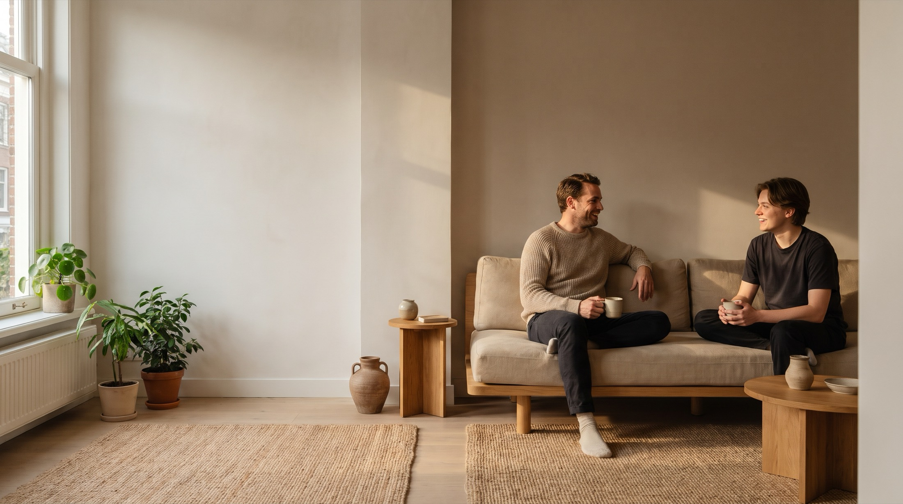
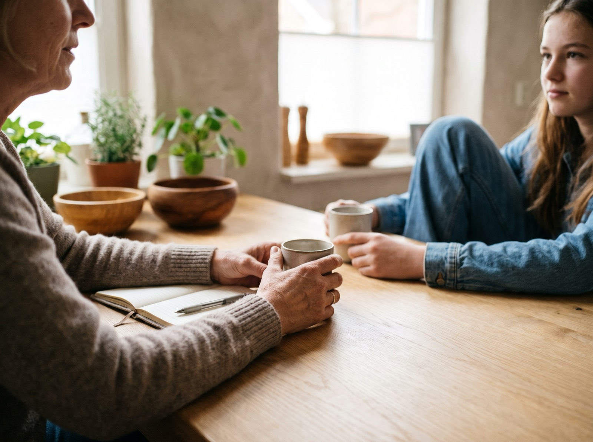
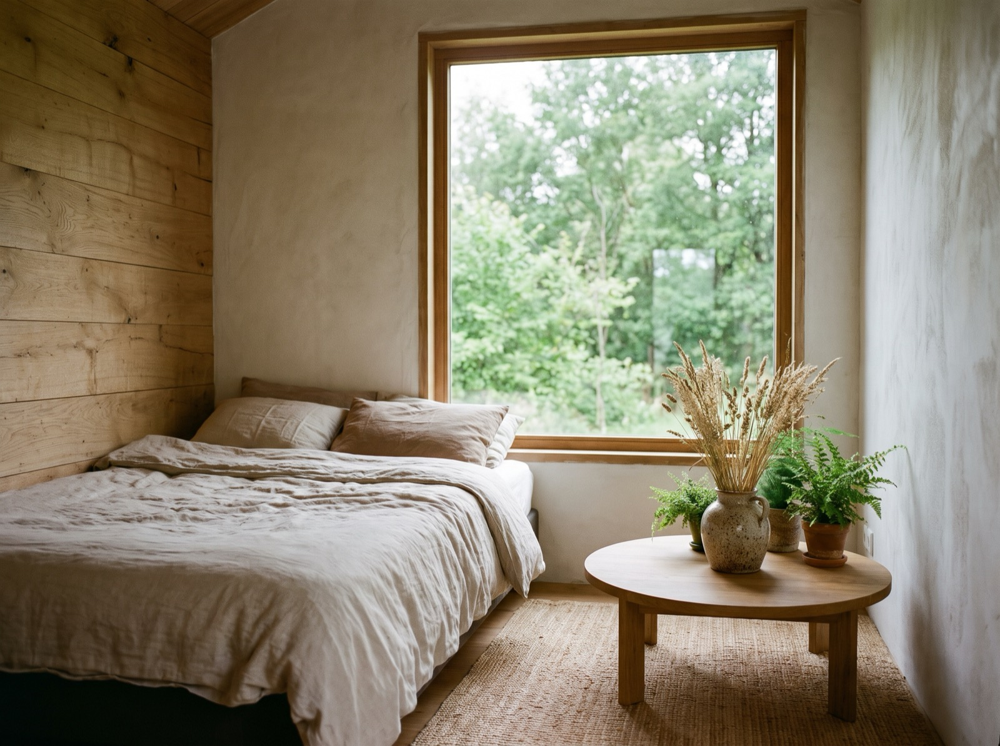
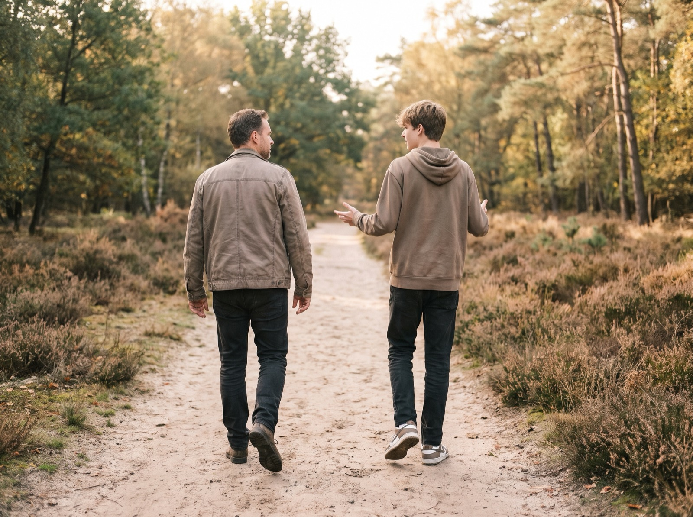
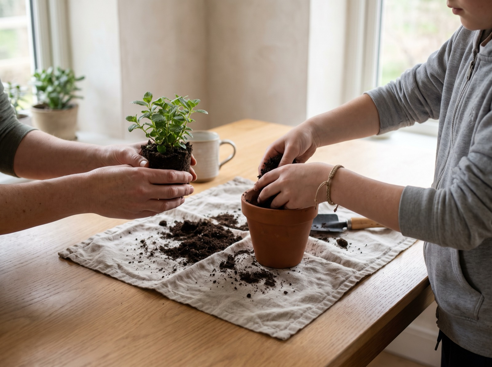

Zorg en begeleiding voor jongeren, jongvolwassenen en volwassenen
Persoonlijke begeleiding, thuis, onderweg of op een plek die bij je past. Met geduld, duidelijkheid en oprechte aandacht.

Wie wij zijn
Achter gedrag zit vaak een behoefte, een emotie of een ervaring. Bij Safe nemen we de tijd om iemand echt te leren kennen. Niet de diagnose staat centraal, maar de jongere erachter: wie je bent, wat je nodig hebt en wat je zelf al kunt.
We hebben brede ervaring in de jeugdzorg, gehandicaptenzorg, forensische zorg, geestelijke gezondheidszorg (ggz) en de begeleiding van complexe en specifieke hulpvragen. Juist waar het in een eigen omgeving niet lukt, zoeken wij naar rust, vertrouwen en een plek die wel passend is.

Persoonlijk en betrokken
Een vaste begeleider die verder kijkt dan gedrag en investeert in een echte vertrouwensband.
Maatwerk, geen standaard
Iedere hulpvraag is anders. We kijken naar de persoon en zoeken samen wat werkt.
Ervaring met complexe vragen
Ook als begeleiding niet vanzelf gaat, blijven we zoeken naar stabiliteit en nieuwe kansen.

Zoveel als nodig,
zo weinig als mogelijk.
We houden een oogje in het zeil en helpen waar het nodig is. Wat je zelf kunt, laten we bij jou. Zo groeit zelfstandigheid, in jouw tempo.
Onze begeleiding
Niet iedereen groeit het beste op dezelfde plek. Daarom denken we flexibel mee over waar en hoe de begeleiding plaatsvindt.

In je eigen omgeving werken aan structuur, dagelijkse vaardigheden en zelfstandigheid.
Mee naar school, werk, sport of afspraken. Begeleiding in het gewone leven.
Individuele begeleiding binnen een zorginstelling of woonvoorziening.
Even een rustige plek als het thuis of in de groep niet meer gaat, als de zorgvraag en de locatie het toelaten.
1
We luisteren naar je verhaal en kijken samen wat je nodig hebt.
2
Haalbare doelen, in jouw woorden en in jouw tempo.
3
Steun waar het nodig is, eigen regie waar het kan.
4
We volgen de voortgang en passen aan als het leven verandert.

Onze ervaring
Soms raakt iemand overprikkeld in een groep, lukt het niet om emoties te reguleren of is er meer één-op-één aandacht nodig. Waar anderen vooral de complexiteit zien, zoeken wij naar mogelijkheden.
Past jouw vraag er niet precies tussen? Neem toch contact op. Iedere hulpvraag begint met een gesprek.
Over Safe
Na jaren in de jeugdzorg, de gehandicaptenzorg, de forensische zorg, de ggz en complexe begeleiding werd één ding steeds duidelijker: niet iedereen past in een standaard aanpak. Sommige jongeren hebben meer tijd nodig. Meer duidelijkheid. Meer nabijheid. Of gewoon iemand die verder kijkt dan de eerste indruk.
Daarom is Safe er: een veilige basis van waaruit je jezelf kunt zijn en verder kunt groeien.
Sayf, oprichter van Safe

Contact
Zoek je begeleiding voor jezelf, je kind, een naaste of iemand die je vanuit je werk ondersteunt? We denken graag mee. Geen verplichtingen, eerst kennismaken.
Deel geen medische of andere gevoelige gegevens per e-mail. Daarvoor maken we samen een veilige afspraak.
Safe is aangesloten bij ZZP-erindezorg.nl. Daarmee hebben we een klachtenregeling, een onafhankelijke klachtenfunctionaris, een klachtencommissie en een erkende geschilleninstantie, zoals de Wkkgz, de Jeugdwet, de Wmo en de Wzd vragen. We werken met een basis kwaliteitssysteem.
Bewijs van aansluiting geldig tot 14 juli 2027
Hoe dien ik een klacht in? Bekijk het certificaat (pdf)